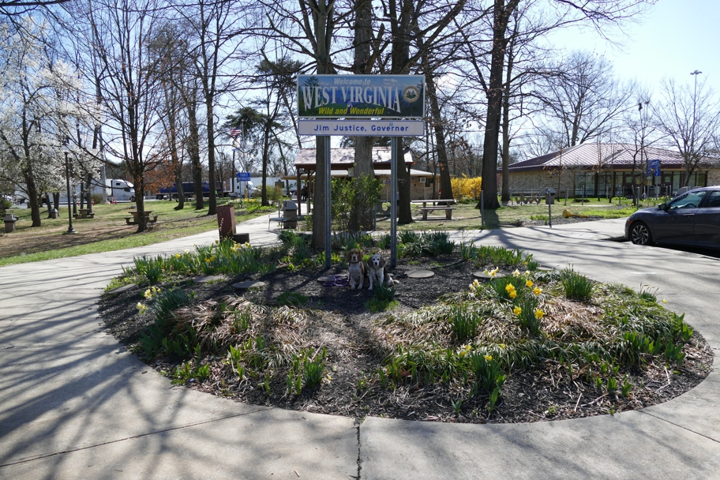

Not far from the Mason-Dixon line, we stopped at this welcome center for a very windy picnic. (It was fire weather; we saw many wildfires in the Shenandoah Valley later in the day.) I had an entertaining conversation with the most enthusiastic and knowledgeable welcome center employee I've ever met. I apologized that we were just going to East Virginia; that led to a long discussion of West Virginia's geography and how it became a state. Sadly it was his last day with this agency. I hope his talents are as well used at his next job. It wasn't long before we were in East Virginia, having driven in four states in less than forty minutes, not counting stops.
Halley Beagle Marlowe Wallace Beagle West Virginia